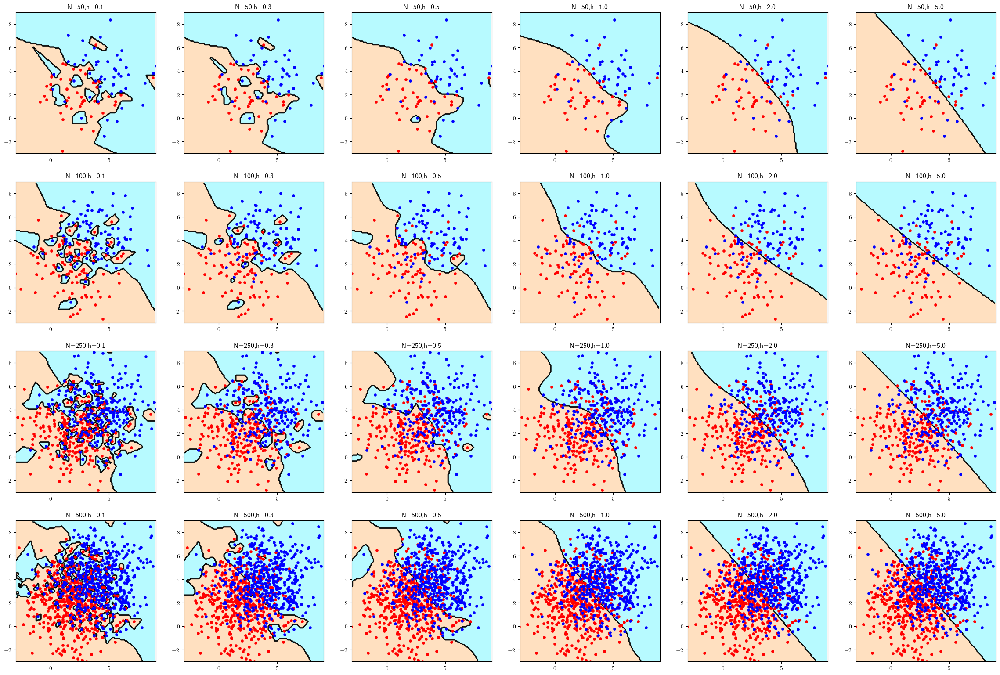

%matplotlib inline
import sys
import matplotlib
import numpy as np
import scipy as sp
import pandas as pd
import sklearn as sk
import scipy.stats as st
import matplotlib.pyplot as plt
from scipy.stats import multivariate_normal as mvn
from sklearn.neighbors import KernelDensity as KD
from matplotlib.colors import ListedColormap
# Fix random state for reproducibility
np.random.seed(1978081)
# Matplotlib setting
plt.rcParams['text.usetex'] = True
matplotlib.rcParams['figure.dpi']= 3008 Homework 3
8.1 Homework Description
- Course: ECEN649, Fall2022
Problems from the book:
5.1
5.2
5.6 (a,b)
5.10 (a,b,c)
Challenge (not graded):
5.4
5.6 (c,d)
- Deadline:
Oct. 26th, 11:59 pm
8.2 Computational Enviromnent Setup
8.2.1 Third-party libraries
8.2.2 Version
print(sys.version)
print(matplotlib.__version__)
print(sp.__version__)
print(np.__version__)
print(pd.__version__)
print(sk.__version__)3.8.14 (default, Sep 6 2022, 23:26:50)
[Clang 13.1.6 (clang-1316.0.21.2.5)]
3.3.1
1.5.2
1.19.1
1.1.1
1.1.28.3 Problem 5.1
Consider that an experimenter wants to use A 2-D cubic histogram classification rule, with square cells with side length \(h_n\), and achieve consistency as the sample size \(n\) increases, for any possible distribution of the data. If the experimenter lets \(h_n\) decrease as \(h_n = \frac{1}{\sqrt{n}}\), would they be guaranteed to achieve consistency and why? If not, how would they need to modify the rate of decrease of \(h_n\) to achieve consistency?
Use Braga-Neto (2020, Theorem 5.6).
Test of consistency
- \(d = 2\)
- \(V_n = h_{n}^{2} = \frac{1}{n}\)
- \(h_n \rightarrow 0\), \(V_n \rightarrow 0\)
- \(nV_n = 1\) is not approaching to infinity as \(n\rightarrow \infty\)
- Thus, the consistency is not guranteed.
Modification
- Let \(h_n = \frac{1}{n^{a}}\)
- \(V_n = \frac{1}{n^{2p}}\), let \(p>0\)
- \(nV_n = \frac{1}{n^{2p-1}}\), \(\lim_{n\to \infty} nV_n \to \infty\). \(2p-1<0\)
- \(0<p<\frac{1}{2}\)
- The universal consistence of the cubic histogram rule is guaranteed.
8.4 Problem 5.2
Consider that an experimenter wants to use the kNN classification rule and achieve consistency as the sample size \(n\) increases. In each of the following alternatives, answer whether the experimenter is successful and why.
8.4.1 (a)
The experimenter does not know the distribution of \((X,Y)\) and lets \(k\) increase as \(k=\sqrt{n}\).
Use Braga-Neto (2020, Theorem 5.7)
- \(k=\sqrt{n}\)
- \(\lim_{n\to \infty} k = \infty\)
- \(\lim_{n\to\infty} \frac{k}{n} = \lim_{n\to\infty}\frac{1}{\sqrt{n}} = 0\)
- The kNN rule is universally consistent.
8.4.2 (b)
The experimenter does not know the distribution but knows that \(\epsilon^{*} = 0\) and keeps \(k\) fixed, \(k=3\).
Because \(k\) is fiexed and independent of \(n\), the approach is not universally consistent. However, since \(\epsilon^{*}=0\), this approach is consistent.
8.5 Problem 5.6
Assume that the feature \(X\) in a classification problem is a real number in the interval \([0,1]\). Assume that the classes are equally likely, with \(p(x|Y=0) = 2xI_{\{0\leq x\leq 1\}}\) and \(p(x|Y=1)= 2(1-x)I_{\{0\leq x\leq 1\}}\).
8.5.1 (a)
Find the Bayes error \(\epsilon^*\).
Becase the two classes are equally likely, \(p(Y=0)=p(Y=1)=0.5\). \[\epsilon^{*}=E[\min(\eta(x), 1-\eta(x))]\]
\[\begin{align} \eta(x) &= p(Y=1|x)\\ &= \frac{p(x|Y=1)p(Y=1)}{p(x)}\\ &= \frac{p(x|Y=1)p(Y=1)}{p(x|Y=0)p(Y=0)+p(x|Y=1)p(Y=1)}\\ &= \frac{2(1-x)\cdot 0.5}{2x\cdot 0.5 + 2(1-x)\cdot 0.5}\\ &= \frac{2(1-x)}{2x + 2-2x}\\ &= 1 - x\\ 1 - \eta(x) &= x \end{align}\]
\(p(x) = p(x|Y=0)p(Y=0)+p(x|Y=1)p(Y=1) = 2x\cdot 0.5 + 2(1-x)\cdot 0.5 = 1\)
\[\begin{align} \epsilon^{*} &=E[\min(\eta(x), 1-\eta(x))]\\ &= E[\min(1-x, x)]\\ &= \int_{0}^{1}\min(\eta(x), 1-\eta(x))p(x)dx\\ &= \int_{0}^{1}\min(\eta(x), 1-\eta(x))dx\\ &= \int_{0}^{\frac{1}{2}} x dx + \int_{\frac{1}{2}}^{1} (1-x)dx\\ &= 0.25 \end{align}\]
8.5.2 (b)
Find the asymptotic error rate \(\epsilon_{NN}\) for the NN classification rule.
Use Cover-Hart Theorem (Braga-Neto 2020, Theorem 5.1).
\[\epsilon_{NN} = \lim_{n\to \infty} E[\epsilon_n] = E[2\eta(X)(1-\eta(X))]\]
Use the result from Problem 5.6(a).
\[\begin{align} \eta(x) &= 1-x\\ 1-\eta(x) &= x \end{align}\]
\[\begin{align} \epsilon_{NN} = \lim_{n\to \infty} E[\epsilon_n] &= E[2\eta(X)(1-\eta(X))]\\ &= E[2(1-x)x]\\ &= 2E[x - x^2]\\ &= 2\left( \int^{1}_{0}xp(x)dx - \int^{1}_{0}x^{2}p(x)dx \right)\\ &= 2\left(\int^{1}_{0}xdx - \int^{1}_{0}x^{2}dx \right)\\ &= 2\left((\frac{1}{2}x^2)^{2}_{1} - (\frac{1}{3}x^2)^{1}_{0} \right)\\ &= 2(\frac{1}{2} - \frac{1}{3})\\ &= 2(\frac{3 - 2}{6})\\ &= \frac{1}{3} \end{align}\]
8.6 Problem 5.10 (Python Assignment)
8.6.1 (a)
Modify the code in
c05_kernel.py(modified in appendix) to obtain plots for \(h = 0.1, 0.3, 0.5, 1, 2, 5\)1 and \(n = 50, 100, 250, 500\) per class. Plot the classifiers over the range \([-3, 9] \times [-3, 9]\) in order to visualize the entire data and reduce the marker size from 12 to 8 to facilitate visualization. Which classifiers are closest to the optimal classifier? How do you explain this in terms of underfitting/overfitting? See the coding hint in part (a) of Problem 5.8.
Since the optimal boundary is a straight line between two centroids. Those classifiers close to optimal decision tend to have large sample size.
The bandwidth (h) can have influences on the underfitting/overfitting. Small h may get overfitting; on the other hand, large h may get underfitting.
def plot_kd(ax, x0, y0, x1, y1, Z):
cmap_light = ListedColormap(["#FFE0C0","#B7FAFF"])
plt.rc("xtick",labelsize=16)
plt.rc("ytick",labelsize=16)
ax.plot(x0,y0,".r",markersize=8) # class 0
ax.plot(x1,y1,".b",markersize=8) # class 1
ax.set_xlim([-3,9])
ax.set_ylim([-3,9])
ax.pcolormesh(xx,yy,Z,cmap=cmap_light, shading="nearest")
ax.contour(xx,yy,Z,colors="black",linewidths=0.5)
plt.close()
return ax
mm0 = np.array([2,2])
mm1 = np.array([4,4])
Sig0 = 4*np.identity(2)
Sig1 = 4*np.identity(2)
Ns = np.array([50, 100, 250, 500])
#Ns = [50]
hs = np.array([0.1,0.3,0.5,1, 2, 5])
#hs = [0.1]
Xs = [[mvn.rvs(mm0, Sig0, n), mvn.rvs(mm1,Sig1,n)] for n in Ns]
clf0s = [[KD() for i in range(0, len(hs))] for j in range(0, len(Ns))]
clf1s = [[KD() for i in range(0, len(hs))] for j in range(0, len(Ns))]
# plotting
x_min,x_max = (-3,9)
y_min,y_max = (-3,9)
s = 0.1 #0.01 # mesh step size
xx,yy = np.meshgrid(np.arange(x_min,x_max,s),np.arange(y_min,y_max,s))
fig, axs = plt.subplots(len(Ns), len(hs), figsize=(30,20), dpi=150)
for (i, X) in enumerate(Xs):
x0,y0 = np.split(X[0],2,1)
x1,y1 = np.split(X[1],2,1)
y = np.concatenate((np.zeros(Ns[i]),np.ones(Ns[i])))
for (j, h) in enumerate(hs):
clf0s[i][j] = KD(bandwidth=h)
clf0s[i][j].fit(X[0])
clf1s[i][j] = KD(bandwidth=h)
clf1s[i][j].fit(X[1])
Z0 = clf0s[i][j].score_samples(np.c_[xx.ravel(), yy.ravel()])
Z1 = clf1s[i][j].score_samples(np.c_[xx.ravel(), yy.ravel()])
Z = Z0<=Z1
Z = Z.reshape(xx.shape)
plot_kd(axs[i][j], x0, y0, x1, y1, Z);
axs[i][j].set_title("N={},h={}".format(Ns[i],h))
plt.close()
fig.savefig("img/c05_kernel.png",bbox_inches="tight",facecolor="white");
8.6.2 (b)
Compute test set errors for each classifier in part (a), using the same procedure as in part (b) of Problem 5.8. Generate a table containing each classifier plot in part (a) with its test set error rate. Which combinations of sample size and kernel bandwidth produce the top 5 smallest error rates?
Bayes error
\[\begin{align} \delta &= \sqrt{(\mu_1 - \mu_0)^T \Sigma^{-1} (\mu_1-\mu_0)} \end{align}\]
\[\epsilon = \Phi(-\frac{\delta}{2}) \approx 0.23975\]
mu1 = np.matrix([[4],[4]])
mu0 = np.matrix([[2,],[2]])
sig = np.matrix([[4,0], [0,4]])
delta = np.sqrt( (mu1-mu0).T @ np.linalg.inv(sig) @ (mu1-mu0))[0][0]
error = st.norm.cdf(-delta/2)
pd.DataFrame({"Bayes Error":[error]})| Bayes Error | |
|---|---|
| 0 | [[0.23975006109347669]] |
Best Five
- 0.269 (1,4)
N=50, h=1 - 0.271 (1,6)
N=50, h=5 - 0.273 (1,5)
N=50, h=2 - 0.274 (3,4)
N=250, h=1 - 0.276 (3,6)
N=250, h=5
def measure_test_error(clf0, clf1, xxs, yys, ys):
Z0 = clf0.score_samples(np.c_[xxs, yys])
Z1 = clf1.score_samples(np.c_[xxs, yys])
Z = Z0<=Z1
return np.count_nonzero(Z != ys.astype(bool)) / len(ys)
nt = 500
X_test = [mvn.rvs(mm0, Sig0, nt), mvn.rvs(mm1,Sig1,nt)]
x0,y0 = np.split(X_test[0],2,1)
x1,y1 = np.split(X_test[1],2,1)
ys = np.concatenate((np.zeros(nt),np.ones(nt)))
errs = np.zeros((len(Ns), len(hs)))
figt, axts = plt.subplots(len(Ns), len(hs), figsize=(30,20), dpi=150)
for i in range(0, len(Ns)):
xxs = np.concatenate((x0, x1))
yys = np.concatenate((y0, y1))
for (j, h) in enumerate(hs):
errs[i][j]= measure_test_error(clf0s[i][j], clf1s[i][j], xxs, yys, ys)
axts[i][j].set_title(axs[i][j].get_title() + "Test Error: {}\n Bayes Error: {}".format(errs[i][j], 2))
plt.close()
Z0 = clf0s[i][j].score_samples(np.c_[xx.ravel(), yy.ravel()])
Z1 = clf1s[i][j].score_samples(np.c_[xx.ravel(), yy.ravel()])
Z = Z0<=Z1
Z = Z.reshape(xx.shape)
plot_kd(axts[i][j], x0, y0, x1, y1, Z);
print(errs)
figt.savefig("img/c05_kernel_test.png",bbox_inches="tight",facecolor="white");[[0.339 0.318 0.279 0.269 0.273 0.271]
[0.349 0.313 0.292 0.281 0.279 0.278]
[0.351 0.296 0.279 0.274 0.278 0.276]
[0.335 0.289 0.283 0.285 0.282 0.282]]8.6.3 (c)
Compute expected error rates for the Gaussian kernel classification rule in part (a), using the same procedure as in part (c) of Problem 5.8. Since error computation is faster here, a larger value \(R = 200\) can be used, for better estimation of the expected error rates. Which kernel bandwidth should be used for each sample size?
errs = np.zeros((len(Ns), len(hs)))
R = 200
for jj in range(0, R):
nt = 500
X_test = [mvn.rvs(mm0, Sig0, nt), mvn.rvs(mm1,Sig1,nt)]
x0,y0 = np.split(X_test[0],2,1)
x1,y1 = np.split(X_test[1],2,1)
ys = np.concatenate((np.zeros(nt),np.ones(nt)))
xxs = np.concatenate((x0, x1))
yys = np.concatenate((y0, y1))
for i in range(0, len(Ns)):
for (j, h) in enumerate(hs):
errs[i][j]+= measure_test_error(clf0s[i][j], clf1s[i][j], xxs, yys, ys)
errs = errs/R
best_hi = np.argmin(errs, axis=1)
print(errs)
print(best_hi)
pd.DataFrame({"Sample Size": Ns, "Best H": hs[best_hi ]})[[0.309245 0.29467 0.26515 0.250625 0.24554 0.24833 ]
[0.325025 0.2838 0.255735 0.2419 0.240805 0.240665]
[0.33395 0.276555 0.25415 0.245395 0.23972 0.23971 ]
[0.31032 0.25389 0.246315 0.240215 0.240195 0.239245]]
[4 5 5 5]| Sample Size | Best H | |
|---|---|---|
| 0 | 50 | 2.0 |
| 1 | 100 | 5.0 |
| 2 | 250 | 5.0 |
| 3 | 500 | 5.0 |
8.7 Appendix
8.7.1 Revised c05_kernel.py2
"""
Foundations of Pattern Recognition and Machine Learning
Chapter 5 Figure 5.5
Author: Ulisses Braga-Neto
Plot kernel classifiers
"""
import numpy as np
import matplotlib.pyplot as plt
from scipy.stats import multivariate_normal as mvn
from sklearn.neighbors import KernelDensity as KD
from matplotlib.colors import ListedColormap
# Fix random state for reproducibility
np.random.seed(1978081)
mm0 = np.array([2,2])
mm1= np.array([4,4])
Sig0 = 4*np.identity(2)
Sig1 = 4*np.identity(2)
N = 50 # number of points in each class
X0 = mvn.rvs(mm0,Sig0,N)
x0,y0 = np.split(X0,2,1)
X1 = mvn.rvs(mm1,Sig1,N)
x1,y1 = np.split(X1,2,1)
X = np.concatenate((X0,X1),axis=0)
y = np.concatenate((np.zeros(N),np.ones(N)))
cmap_light = ListedColormap(["#FFE0C0","#B7FAFF"])
s = .01 # mesh step size
x_min,x_max = (-0.5,6.5)
y_min,y_max = (-0.5,6.5)
for h in [0.1,0.3,0.5,1]:
clf0 = KD(bandwidth=h)
clf0.fit(X0)
clf1 = KD(bandwidth=h)
clf1.fit(X1)
xx,yy = np.meshgrid(np.arange(x_min,x_max,s),np.arange(y_min,y_max,s))
Z0 = clf0.score_samples(np.c_[xx.ravel(), yy.ravel()])
Z1 = clf1.score_samples(np.c_[xx.ravel(), yy.ravel()])
Z = Z0<=Z1
Z = Z.reshape(xx.shape)
fig,ax=plt.subplots(figsize=(8,8),dpi=150)
plt.rc("xtick",labelsize=16)
plt.rc("ytick",labelsize=16)
plt.plot(x0,y0,".r",markersize=16) # class 0
plt.plot(x1,y1,".b",markersize=16) # class 1
plt.xlim([-0.18,6.18])
plt.ylim([-0.18,6.18])
plt.pcolormesh(xx,yy,Z,cmap=cmap_light)
ax.contour(xx,yy,Z,colors="black",linewidths=0.5)
plt.show()
fig.savefig("c05_kernel"+str(int(10*h))+".png",bbox_inches="tight",facecolor="white")In Problem 5.10, please replace k=1,3,5,7,9,11 by h=0.1,0.3,0.5,1,2,5 Ulisses on Slack
All, be careful with script
c05_kernel.py. If you replace the variablebtohin the script, it will shock with the grid step size parameter, which is also calledh, and you will get erroneous results. Ulisses on Slack